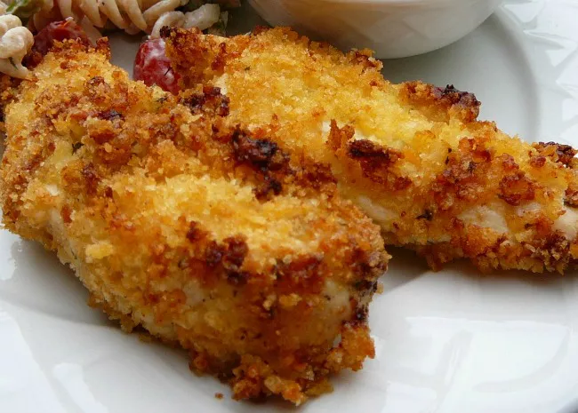

Tender Italian Baked Chicken

Description
Tender, moist baked chicken with an Italian accent. Delicious
and ready in only 30 minutes. The breadcrumb and Parmesan cheese
coating keeps the chicken breasts moist during baking, and
wonderfully crispy once cooked.
Ingredients
- 3/4 cup of mayonnaise
- 1/2 cup grated Parmesan cheese
- 3/4 teaspoon garlic powder
- 3/4 cup Italian seasoned bread crumbs
- 4x skinless, boneless chicken breast halves
Steps
- Preheat the oven to 220 degrees C (425 degrees F) and
gather ingredients.
- Mix mayonnaise, Parmesan cheese, and garlic powder
together in a bowl.
- Place bread crumbs in a seperate bowl. Dip each chicken
breast into the mayonnaise mixture, then into the bread
crumbs until heavily coated.
- Arrange breaded chicken on a baking sheet.
- Bake in oven until chicken is no longer pink in center and
coating is golden brown (should take about 20 minutes).
An instant read thermometer inserted in the center should
read at least 74 degrees C (165 degrees F).
- Serve hot and enjoy.
Return to main page